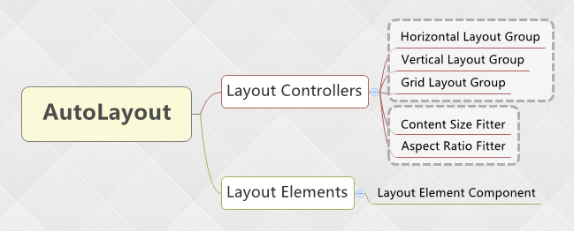
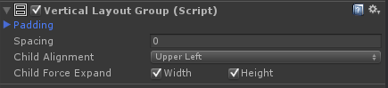
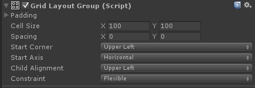
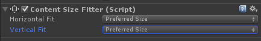
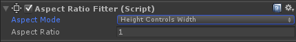
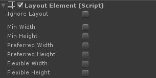
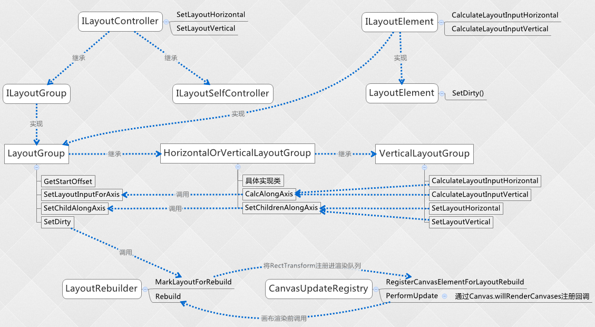
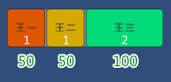

AutoLayout剖析
RectTransform作为单个UI元素布局是十分灵活的，但是当一组UI元素需要规律的排布时，就需要“AutoLayout”这种组级别的布局方式。AutoLayout能决定子元素的排布方式，同时子元素也可以影响父元素的排布。相对于RectTransform，AutoLayout的功能更容易被理解和上手。
一、概要
自动布局系统主要提供两种功能“layout controllers（布局控制器）”和“layout elements（布局元素）”。一般情况下布局控制器是父元素如何控制子元素的布局，而布局元素是子元素控制自己本身的布局大小并可以影响父元素的布局方式。

二、布局控制器
（一）、Layout Group（布局组）
布局组提供Horizontal Layout Group（水平布局组）和Vertical Layout Group（垂直布局组），以及Grid Layout Group（网格布局组）三种功能。
这三个布局组参数基本一致，详细说明可以参考官网文档：官网文档。但也有一些差别。
1、水平和垂直布局组特有的属性：Child Force Expand

勾选Child Force Expand，如果父元素有额外可用空间时，会促使子元素强制扩充。一般配合布局元素组件的minimum,preferred和flexible尺寸使用。
2、网格布局组
• Start Corner和Child Alignment的区别：Start Corner是决定子元素排放顺序的开始位置，Child Alignment是决定所有子元素作为一个整体在父元素中的排放位置。
• 网格布局组，子布局元素设定的尺寸信息无效。在网格布局组下，其子布局元素设置的minimum,preferred和flexible尺寸无法生效，只会生效网格设定的尺寸。在网格布局组下，子布局元素只能通过Ignore Layout跳出布局控制器，其它属性设置无效。

（二）、控制自身的布局控制器
Content Size Fitter（内容尺寸适配器）和Aspect Ratio Fitter（宽高比适配器）是控制自身尺寸的布局控制器。
Content Size Fitter（内容尺寸适配器）

通过子元素设定的布局元素minimum,preferred尺寸或内容本身的显示尺寸来调整本身的尺寸信息。最常用于文本内容的父元素，父元素通过文本内容的长度动态设置自身的尺寸。
Aspect Ratio Fitter（宽高比适配器）

通过调整自身的宽或高来对应调整另一边的尺寸，也可以选择填满父元素。和网格布局组一样，子布局元素设定的尺寸信息无效。
三、布局元素
布局元素是一个含有RectTransform组件的GameObject，作为布局元素并不能直接更改RectTransform中的尺寸信息，只能通过挂载“layout elements component”这个组件来设置布局信息，以供布局控制器计算。

• Minimun width（最小宽度）
• Minimum height（最小高度）
• Preferred width（期望宽度，相当于最大宽度）
• Preferred height（期望高度，相当于最大高度）
• Flexible width（灵活宽度，一般是相对父元素的比例）
• Flexible height（灵活高度，一般是相对父元素的比例）
四、布局接口（自定义布局功能）
可参考官方uGUI开源代码:https://bitbucket.org/Unity-Technologies/ui

（一）、布局主要接口
• ILayoutController：布局控制器
• ILayoutElement：布局元素（布局控制器本身也是布局元素，LayoutGroup也实现它）
• ILayoutSelfController：实现此接口，表明组件需要驱动自身的RectTransform。目前有：ContentSizeFitter、AspectRatioFitter。
（二）、LayoutGroup实现
• 实现CalculateLayoutInputHorizontal方法，将没有忽略布局的子布局元素添加到列表。
• GetStartOffset方法，根据childAlignment计算子元素开始排布的起始位置。
• SetChildAlongAxis方法，按指定起始位置和尺寸添加子元素，未开源。
（三）、HorizontalOrVerticalLayoutGroup实现
HorizontalOrVerticalLayoutGroup是布局组控制器的具体实现类，包含两个方法CalcAlongAxis和SetChildrenAlongAxis。
• CalcAlongAxis：计算所有子布局元素的totalMin、totalPreferred、totalFlexible
• SetChildrenAlongAxis：通过CalcAlongAxis计算的值，进行子元素起始位置和子元素尺寸的最终计算，并调用LayoutGroup.SetChildAlongAxis添加子元素。
此段代码比较关键，故直接贴出来：
HorizontalOrVerticalLayoutGroup.cs
protected void SetChildrenAlongAxis(int axis, bool isVertical)
{
float size = rectTransform.rect.size[axis];
bool alongOtherAxis = (isVertical ^ (axis == 1));
if (alongOtherAxis)
{
float innerSize = size - (axis == 0 ? padding.horizontal : padding.vertical);
for (int i = 0; i < rectChildren.Count; i++)
{
RectTransform child = rectChildren[i];
float min = LayoutUtility.GetMinSize(child, axis);
float preferred = LayoutUtility.GetPreferredSize(child, axis);
float flexible = LayoutUtility.GetFlexibleSize(child, axis);
if ((axis == 0 ? childForceExpandWidth : childForceExpandHeight))
flexible = Mathf.Max(flexible, 1);
float requiredSpace = Mathf.Clamp(innerSize, min, flexible > 0 ? size : preferred);
float startOffset = GetStartOffset(axis, requiredSpace);
SetChildAlongAxis(child, axis, startOffset, requiredSpace);
}
}
else
{
float pos = (axis == 0 ? padding.left : padding.top);
if (GetTotalFlexibleSize(axis) == 0 && GetTotalPreferredSize(axis) < size)
pos = GetStartOffset(axis, GetTotalPreferredSize(axis) - (axis == 0 ? padding.horizontal : padding.vertical));
float minMaxLerp = 0;
if (GetTotalMinSize(axis) != GetTotalPreferredSize(axis))
minMaxLerp = Mathf.Clamp01((size - GetTotalMinSize(axis)) / (GetTotalPreferredSize(axis) - GetTotalMinSize(axis)));
float itemFlexibleMultiplier = 0;
if (size > GetTotalPreferredSize(axis))
{
if (GetTotalFlexibleSize(axis) > 0)
itemFlexibleMultiplier = (size - GetTotalPreferredSize(axis)) / GetTotalFlexibleSize(axis);
}
for (int i = 0; i < rectChildren.Count; i++)
{
RectTransform child = rectChildren[i];
float min = LayoutUtility.GetMinSize(child, axis);
float preferred = LayoutUtility.GetPreferredSize(child, axis);
float flexible = LayoutUtility.GetFlexibleSize(child, axis);
if ((axis == 0 ? childForceExpandWidth : childForceExpandHeight))
flexible = Mathf.Max(flexible, 1);
float childSize = Mathf.Lerp(min, preferred, minMaxLerp);
childSize += flexible * itemFlexibleMultiplier;
SetChildAlongAxis(child, axis, pos, childSize);
pos += childSize + spacing;
}
}
（四）、渲染
根据上面的类和接口示意图，当UI元素RectTransform发生变化时，并不会立即触发UI重建。为了提高性能，节省开销，uGUI也是在帧的末尾（渲染发生之前）才会进行重新进入UI重建。主要是通过 Canvas.willRenderCanvases 事件进行触发。
在uGUI布局系统中，主要是通过LayoutRebuilder类和CanvasUpdateRegistry类实现的。
• 继承UIBehaviour的类，在UI重建事件触发时，调用 SetDirty 方法，再调用LayoutRebuilder.MarkLayoutForRebuild。
• CanvasUpdateRegistry 类主要负责队例管理，排序，并注册Canvas.willRenderCanvases 事件，以接受事件触发队列中的重建方法。
• LayoutRebuilder 类是真正实现UI重建的类，通过 Rebuild 方法，会先调用CalcAlongAxis 计算所有子布局元素的 totalMin、totalPreferred、totalFlexible。再调用 SetChildrenAlongAxis 给子元素设置最终的起始位置和子元素尺寸。
五、弹性布局（也有叫：灵活布局）
弹性布局是在有限的空间内按需分配置空间，一个子元素分配多了，剩下的子元素就少了，子元素之间按一定比例分配。在uGUI中表现为，一个父元素，使用了水平布局组或垂直布局组（网格布局组无效）。子元素设置Flexibl width或Flexibl height。
一个疑惑的实例
按以前类似的弹性布局UI（比如：CSS3的box-flex属性）实例，可以有如下推断。以弹性宽度为例：所有子元素的FlexiblWidth标记为totalFlexibleWidth，单个子元素的实际宽度=父元素宽 (FlexiblWidth / totalFlexibleWidth)。*（注意：此段待商议）
我们来一段实例：
• 一个Panel(垂直布局组)下面有两Button（ButtonA和ButtonB）
• Panel高度为100
• ButtonA的FlexiblHeight为：2
• ButtonB的FlexiblHeight为：3
按以上推断结果:
• ButtonA.height = 100 * (2 / (2+3)) = 40
• ButtonB.height = 100 * (3 / (2+3)) = 60
伤神的，实际的结果并非如此，实际结果为：
• ButtonA.height = 42
• ButtonB.height = 58
这是为什么呢，uGUI的官方文档又不说清楚，真是无比坑。好在现在uGUI的源码了，回到上文的HorizontalOrVerticalLayoutGroup.SetChildrenAlongAxis方法。
//axis是一个标志位，0表示宽度，1表示高度；size是实际的尺寸
float minMaxLerp = Mathf.Clamp01((size - GetTotalMinSize(axis)) / (GetTotalPreferredSize(axis) - GetTotalMinSize(axis)));
float itemFlexibleMultiplier = (size - GetTotalPreferredSize(axis)) / GetTotalFlexibleSize(axis);
float childSize = Mathf.Lerp(min, preferred, minMaxLerp);
childSize += flexible * itemFlexibleMultiplier;
根据以上代码，关键信息终于暴露了，不考虑flexible时，childSize是min和preferred的一个插值，而插值系数minMaxLerp的值，见以上公式。也就是如果min和preferred都不为0时，childSize是取两者之间的一个插值，可以理解为百分比。
重要：只有当size>totalPreferredSize时，itemFlexibleMultiplier才不会为0，设置了flexible值才会有效。也就是说弹性布局只有在所有子元素PreferredSize之和小于父元素实际尺寸，才会有效。
弹性尺寸计算公式
flexible / totalFlexibleSize * (size - totalPreferredSize)
解读为，弹性比例乘以未分配的空间尺寸。
最终的childSize是min和preferred之间的一个插值，再叠加弹性尺寸所得。
再回到上文这个疑惑的例子，根据上面的公式，弹性尺寸和Preferred的设置是有关的，那么Button是不是有默认的PreferredSize呢？Button上默认会挂载一个Image，通过脚本获取，Button.Image默认的Preferred为10。
根据以上弹性尺寸的全新理解，我们再来推断以上例子的结果。
• size=100
• ButtonA.Image.minHeight=0
• ButtonA.Image.preferredHeight=10
• ButtonAHeight=10f（min和preferred之间的插值）
• ButtonAHeight+=2/(2+3) * (100-(10+10))（弹性尺寸）
• ButtonAHeight=42（与实际结果一致）
“案子破了”，如果uGUI文档能说详细一点，就不用大费周章才能了解一个简单的属性值。
一个通俗的例子
说一个隔壁老王家分房的案例，以加深对弹性布局的理解。
老王家三个孩子，分别叫：王一、王二、王三。老王有一套面积200平米的房子，需要给他们分房。
1、按比例分配
老王偏心，特别喜欢老幺王三，故给王三分配了比例为2。王一，王二分别分配比例为1。大家都知道弹性布局是受min和preferred影响，也就是老王的儿子们有最小分配和期望分配。为了完全按比例分配，老王对儿子们的期望都不管不顾，将min和preferred设为了0.

2、部份按比例
王三和老王，他必须要80平米，剩下的120平，王一和王二一人一半，这种情况下怎么分呢？
理论上只要给王三分80，给王一和王二flexible设为1，即可。但实际结果又不并不是所期望的样子，为什么呢？其实这种情况下需要老王把childForceExpandWidth设为false，因为在uGUI处理中，如果childForceExpandWidth设为了true，即使王三没有设置flexible，也会被强制设为1。
if ((axis == 0 ? childForceExpandWidth : childForceExpandHeight))
flexible = Mathf.Max(flexible, 1);
🔚